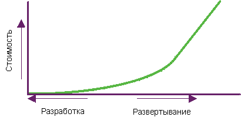

| Управление качеством |
 |
|
| Связанные элементы |
|---|
|
 Затраты на обнаружение и исправление неполадок программного обеспечения возрастают в 100 - 1000 раз после развертывания. Проверка и управление качеством на протяжении жизненного цикла процесса имеют важное значение для достижения требуемых целей в нужное время. Что имеется в виду под проверкой качества на протяжении жизненного цикла?Важно оценивать качество всех артефактов при достижении определенных точек жизненного цикла проекта. Артефакты следует оценивать после выполнения действий, в результате которых они создаются, и по окончании каждой итерации. В частности, при создании исполняемой программы следует предусмотреть демонстрацию и тестирование основных сценариев в каждой итерации, что обеспечивает более ясное понимание компромиссных дизайнерских решений и позволяет раньше устранить недостатки архитектуры. Это отличает данную технологию от более традиционного подхода, при котором тестирование интегрированного программного обеспечения выполняется на поздних стадиях жизненного цикла. Что такое качество?ВведениеКачество - это то, чего стремится достичь каждый в своих продуктах, процессах и услугах. Однако на вопрос "Что такое качество?", существует множество различных ответов. В их число входят:
Возможно, наиболее распространенной фразой о качестве, в частности, по отношению к программному обеспечению, является следующее замечание об отсутствии качества:
Эти распространенные ответы красноречивы, однако не позволяют строго исследовать качество и улучшить его. Данные комментарии демонстрируют необходимость определения качества таким образом, чтобы его можно измерять. Качество, однако, не является отдельной характеристикой или атрибутом. Оно имеет много аспектов и может принадлежать продукту или процессу. Качество продукта сосредоточено на создании требуемого продукта, в то время как качество процесса сфокусировано на правильном создании продукта. Дополнительная информация приведена в разделах Концепции: Качество продукта и Концепции : Качество процесса. Определение качестваСледующее определение качества взято из словаря The American Heritage Dictionary of the English Language, 3rd Edition, Houghton Mifflin Co.,© 1992, 1996:
Как видно из этого определения, качество имеет много аспектов. Для того чтобы данное определение можно было применять при разработке программного обеспечения, его следует уточнить. Поэтому в Rational Unified Process (RUP) качество определяется следующим образом:
Достижение качества - это не просто "соответствие требованиям" либо создание продукта, соответствующего потребностям и ожиданиям пользователя. Качество также включает идентификацию величин и критериев, демонстрирующих достижение качества, и реализацию процесса, который гарантирует, что продукт, созданный в этом процессе, достиг необходимого уровня качества, процесса, который можно повторить и которым можно управлять. Дополнительная информация об определении качества в RUP приведена на следующих страницах:
Кто владеет качеством?Распространенным заблуждением является то, что качеством владеет, или отвечает за качество, одна группа. Этот миф часто выражается в создании группы, которая иногда носит название Обеспечение качества ( а также, Тестирование, Управление качеством и Техническое обеспечение качества), и на которую возлагается ответственность за качество. За качество должен отвечать каждый. Достижение качества должно являться не отдельной областью, а быть комплексным для всех операций в процессе, что возлагает ответственность за качество продуктов (или артефактов) на каждого, кто участвует в их создании, а также ответственность за реализацию процесса, в который он вовлечен. Каждая роль вносит свой вклад в достижение качества следующим образом:
Все разделяют ответственность и признание при достижении высокого качества продукта либо стыд при создании продукта низкого качества. Однако за качество компонентов (и артефактов) процесса отвечают только те, кто непосредственно вовлечен в данный компонент процесса. Кто-либо может принять ответственность за управление качеством, то есть обеспечивать руководство, которое гарантирует управление, измерение и достижение качества. Ролью, отвечающей за управление качеством, является Руководитель проекта. Стандартные ошибочные представления о качествеСуществует множество заблуждений, относящихся к качеству. Наиболее распространенными являются следующие:
Качество можно добавить в продукт или "обнаружить" в продуктеТак же как нельзя создать продукт, если нет описания того, что он из себя представляет, что должен выполнять, кто и каким образом его будет использовать и так далее, так и нельзя достигнуть качества, если оно не описано, не измерено и не является частью процесса создания продукта. См. Концепции: Измерение качества и раздел Качество возникает само по себе данного документа. Качество является отдельным показателем, атрибутом или характеристикой и для всех означает одно и то жеКачество не является отдельным показателем, атрибутом или характеристикой. Существует много способов измерения качества - показатели и критерии качества задаются в соответствии с потребностями проекта, организации и заказчика. Существует несколько аспектов измерения качества - некоторые из них относятся к качеству проекта, некоторые - к качеству продукта, а некоторые - и к проекту, и к продукту. Качество можно измерить для следующих показателей:
Дополнительная информация приведена в разделах Концепции: Аспекты качества, Концепции: Качество продукта и Концепции: Качество процесса. Качество возникает само по себеКачество не может возникнуть само по себе. Для достижения качества процесс должен быть реализован, его следует придерживаться и измерять. Целью RUP является обеспечение дисциплинированного подхода к присвоению задач и ответственности в организации-разработчике. Наша задача состоит в том, чтобы в рамках прогнозируемого расписания и бюджета гарантировать создание высококачественного программного обеспечения, которое соответствует потребностям пользователей. RUP охватывает многие эффективные методы современной разработки программного обеспечения таким образом, что их можно использовать для широкого круга проектов и организаций. В разделе Среда представлены рекомендации по наилучшей настройке процесса в соответствии с имеющими потребностями. Можно настраивать процессы и согласовывать качество (критерии приемлемости) на основании нескольких факторов. Наиболее распространенными из них являются:
Изменения в процессе и критериях приемлемости должны быть идентифицированы и согласованы в начале проекта. Управление качеством в RUPСуществуют следующие цели управления качеством:
Управление качеством реализуется во всех разделах, потоках операций, фазах и итерациях в RUP. В целом, управление качеством на протяжении жизненного цикла означает реализацию, измерение и оценку и качества процесса, и качества продукта. Некоторые действия по управлению качеством в каждом разделе представлены в следующем списке:
|
© Copyright IBM Corp. 1987, 2006. Все права защищены.. |